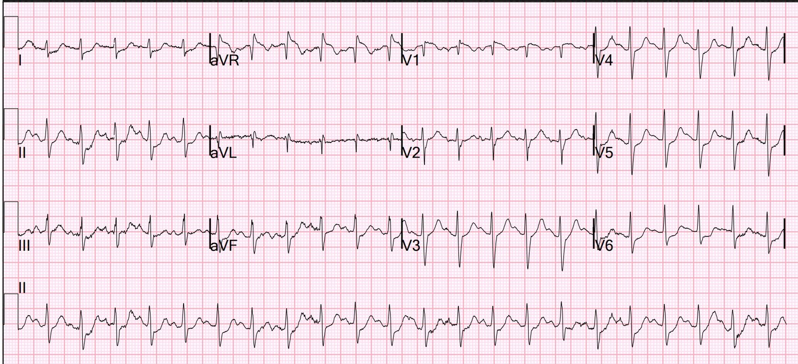
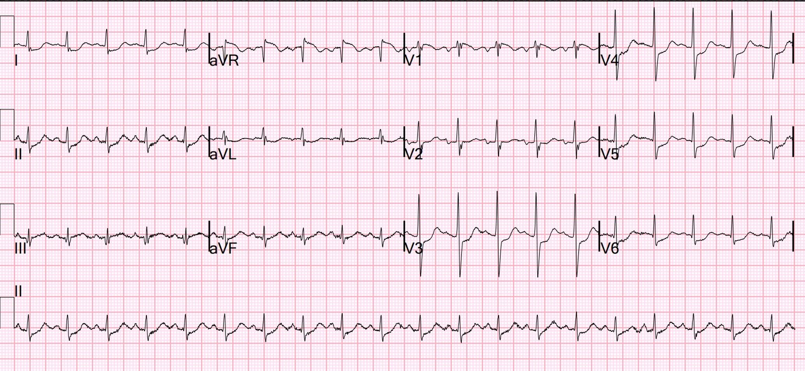
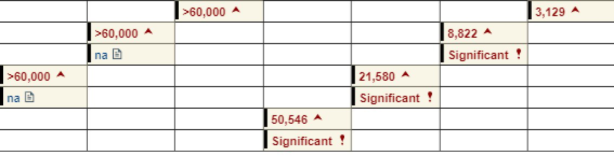
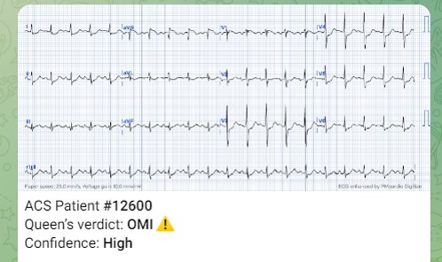
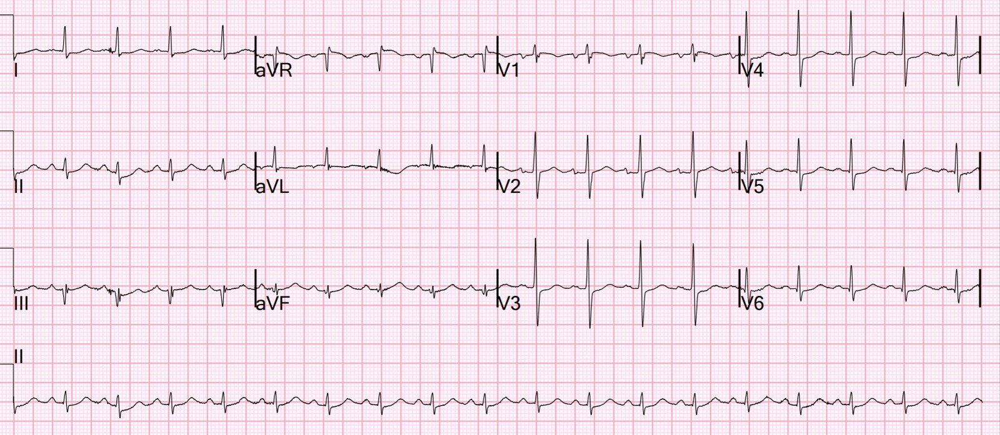
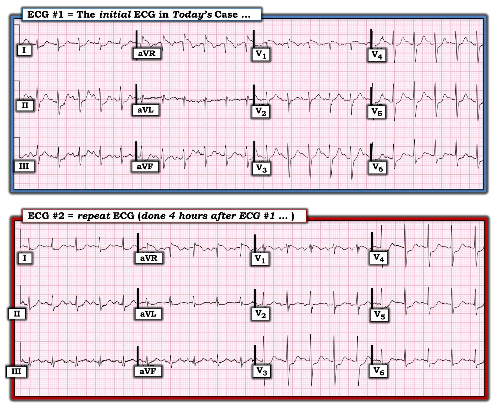

22/11/2023 — Nhiễm trùng và DKA, rồi đột ngột khó thở kèm đau ngực khi đang ở khoa cấp cứu
Bản dịch tiếng Việt của bài "Infection and DKA, then sudden dyspnea with chest pain while in the ED" – Dr. Smith’s ECG Blog. Giữ nguyên toàn bộ 7 hình ảnh của bản gốc.
Một bệnh nhân nam 63 tuổi có tiền sử bệnh động mạch vành (CAD) và bệnh mạch máu ngoại biên do đái tháo đường típ I đến phòng khám, được phát hiện đường huyết rất cao nên được chuyển tới khoa cấp cứu (ED).
Bệnh nhân cho biết đường huyết của ông trên 400 dù ông không bỏ liều insulin nào. Ông cũng ghi nhận mệt mỏi, khó chịu ở dạ dày, tiểu nhiều, khát nhiều và chán ăn trong 2 ngày qua.
Mạch 115, huyết áp 140/65, không sốt
Bệnh nhân được phát hiện viêm mô tế bào và đang trong tình trạng nhiễm toan ceton do đái tháo đường (DKA), với bicarbonat 14, pH 2.27, đường huyết 381, khoảng trống anion 18 và lactat 2.2 mEq/L.
Bệnh nhân được điều trị nhiễm trùng và DKA, và đã có kế hoạch nhập viện.
Trong khi ở khoa cấp cứu, bệnh nhân xuất hiện khó thở cấp lúc nghỉ, ban đầu không kèm đau ngực. Sau đó ông xuất hiện đau ngực nhẹ liên tục, mà ông mô tả như cảm giác có người đang đứng trên ngực mình.
Điện tâm đồ này được ghi lại:


Bạn nghĩ gì?
Có ST chênh xuống lan tỏa. Đây là ST chênh xuống do thiếu máu cục bộ, và có thể do nhịp nhanh tăng dần, với tần số tim trên 130, nhưng điều đó khó xảy ra vì bệnh nhân lúc này đang than đau ngực dữ dội như bị đè ép và vì trước khi xuất hiện đau ngực cũng đã có nhịp nhanh.
Siêu âm tim tại giường không thấy bằng chứng giảm EF, không có dấu hiệu tăng gánh tim phải, không có bất thường vận động thành khu trú. Khám phổi thấy đường B lan tỏa hai bên. X-quang phù hợp với sung huyết mạch máu phổi. Đã cho 40 mg furosemide.
Điểm quan trọng: khi có thiếu máu cục bộ dưới nội tâm mạc lan tỏa nhưng không có OMI, rối loạn vận động thành không nhất thiết phải hiện diện. Xem bài này: What do you think the echocardiogram shows in this case? (Bạn nghĩ siêu âm tim cho thấy gì trong ca này?)
Ngay sau đó, kết quả troponin trả về là 3,129 ng/L (rất cao). Bệnh nhân được cho aspirin và mời tim mạch hội chẩn. Nhưng do không có ST chênh lên đáng kể, phòng thông tim (cath lab) không được kích hoạt. Họ đồng ý rằng nhiều khả năng đây là thiếu máu cục bộ trong bối cảnh tăng nhu cầu do DKA và nhiễm trùng. Điện tâm đồ cho thấy nhịp xoang 100 lần/phút với trục bình thường và ST chênh xuống lan tỏa.
Việc tất cả chỉ là thiếu máu cục bộ do tăng nhu cầu là khó xảy ra. Bệnh nhân không có triệu chứng ở ngực cho đến khi đã ở khoa cấp cứu nhiều giờ và đang được xử trí DKA.
Một điện tâm đồ khác được ghi lại:


Bạn nghĩ gì?
Đây là hình ảnh chẩn đoán nhồi máu cơ tim do tắc (OMI) dưới dạng hình ảnh Aslanger (có giá trị chẩn đoán OMI). Hình ảnh Aslanger là sự kết hợp giữa OMI thành dưới với ST chênh xuống lan tỏa, và là do CẢ tắc một động mạch (thường là động mạch mũ, nhưng đôi khi là RCA) VÀ đồng thời có bệnh 3 nhánh mạch vành.
Vì có một vectơ ST chênh xuống hướng về các chuyển đạo V5 và II, các chuyển đạo aVF và II không thể biểu hiện ST chênh lên hay sóng T tối cấp do OMI thành dưới. Vectơ ST chênh xuống bao gồm các chuyển đạo này và triệt tiêu phần ST chênh lên (STE) của OMI thành dưới. Chỉ chuyển đạo III có thể có STE (và dĩ nhiên cả aVR, là chuyển đạo đối diện, soi gương với ST chênh xuống ở I, II, V5).
Không biết gì về bệnh nhân, tôi thấy điện tâm đồ này trên hệ thống của chúng tôi ngay lúc tôi đang rời khoa. Bệnh nhân đang được một bác sĩ cấp cứu khác chăm sóc.
Đây là kết quả đọc mà tôi đã nhập vào hệ thống, và tôi đã báo cho các bác sĩ về điều đó:
Nhồi máu cơ tim do tắc thành dưới kèm thiếu máu cục bộ dưới nội tâm mạc lan tỏa. Hình ảnh Aslanger. Sóng T tối cấp ở chuyển đạo III, với dấu hiệu soi gương ở aVL — OMI biểu hiện ở một chuyển đạo duy nhất trong bối cảnh bệnh nhiều nhánh mạch vành.
Hình ảnh Aslanger (Smith là đồng tác giả bài này): A new electrocardiographic pattern indicating inferior myocardial infarction (Một hình ảnh điện tâm đồ mới chỉ điểm nhồi máu cơ tim thành dưới)
Kết quả troponin tiếp theo là 8822 ng/L.
Các bác sĩ cấp cứu đã đề nghị chuyển phòng thông tim nhưng bệnh nhân không được đưa đi cho đến sáng hôm sau vì đây là một ca “NonSTEMI”.
Đây là diễn biến troponin:


Đây là đánh giá của Queen of Hearts:


Ứng dụng Queen of Hearts PM Cardio hiện đã có mặt tại Liên minh châu Âu (được phê duyệt CE), trên App Store và Google Play.
Với người Mỹ, bạn cần chờ FDA. Nhưng trong lúc chờ đợi:
BẠN CÓ CƠ HỘI ĐƯỢC TRUY CẬP SỚM PM Cardio AI BOT!! (ỨNG DỤNG AI OMI CỦA PM CARDIO)
Nếu bạn muốn bot này giúp bạn chẩn đoán sớm OMI và cứu bệnh nhân cùng cơ tim của họ, bạn có thể đăng ký nhận phiên bản beta sớm của bot tại đây. Ứng dụng chưa phát hành, nhưng đây là cách để bạn có tên trong danh sách.
https://share-eu1.hsforms.com/18cAH0ZK0RoiVG3RjC5dYdwfyfsg (biểu mẫu đăng ký)
Ca bệnh tiếp diễn
Sau khoảng 8 giờ đau, cơn đau của bệnh nhân tự hết, có lẽ nhờ có aspirin và heparin hỗ trợ. Đây là điện tâm đồ tại thời điểm đó:


Tình trạng thiếu máu cục bộ phần lớn đã hết. Có thể dự đoán rằng chụp mạch vành sẽ cho thấy các động mạch thông với dòng chảy TIMI-3 bình thường và có các tổn thương thủ phạm. 20% các ca mà ai cũng gọi là STEMI có động mạch thông hoàn toàn vào thời điểm chụp mạch vành 60-90 phút sau đó.
Vì vậy, việc động mạch thông không cho bạn biết gì về tình trạng động mạch tại thời điểm ghi điện tâm đồ.
Chụp mạch vành:
Bệnh động mạch vành hai nhánh nặng với khả năng có các đồng thủ phạm (hẹp 90% đoạn gần động mạch mũ, 70% đoạn giữa/xa RCA) trong bối cảnh nhồi máu cơ tim không ST chênh lên.
Các stent đã đặt trước đây ở LAD (nhiều stent) và đoạn giữa động mạch mũ vẫn thông
Siêu âm tim chính thức:
Kích thước và độ dày thành thất trái bình thường.
Chức năng tâm thu thất trái giảm nhẹ với EF ước tính 48%.
Rối loạn vận động thành khu trú – giảm động vùng đáy đến giữa thành dưới và thành dưới-bên.
Đây là siêu âm tim trước đó chỉ 3 tháng
Kích thước buồng thất trái bình thường. Độ dày thành thất trái bình thường.
Phân suất tống máu 66%.
Không có rối loạn vận động thành khu trú.

===================================
BÌNH LUẬN CỦA TÔI, bởi KEN GRAUER, MD (21/11/2023):
===================================
Ca hôm nay là một ví dụ tuyệt vời về hình ảnh Aslanger (Aslanger’s Pattern) — đồng thời là một bài kiểm tra tinh tế về “nghệ thuật” so sánh các điện tâm đồ liên tiếp.
- Để rõ ràng, trong Hình 1 — tôi đã đặt lại 2 điện tâm đồ đầu tiên của ca hôm nay. Có thể quá dễ dàng bỏ sót những thay đổi điện tâm đồ tinh tế-nhưng-có-thật đã xảy ra trong 4 giờ trôi qua giữa lúc ghi 2 bản ghi này.


So sánh giữa điện tâm đồ #1 và #2:
Như Dr. Smith đã nêu — điện tâm đồ #1 cho thấy nhịp nhanh xoang với hình ảnh DSI (thiếu máu cục bộ dưới nội tâm mạc lan tỏa — Diffuse Subendocardial Ischemia) — ở chỗ có ST chênh xuống ở nhiều chuyển đạo kèm ST chênh lên ở chuyển đạo aVR>V1.
- ĐIỂM THEN CHỐT (PEARL) #1: Cách TỐT NHẤT để so sánh 2 điện tâm đồ liên tiếp — là đặt hai bản ghi cạnh nhau — rồi so sánh từng chuyển đạo một để nhận ra bất kỳ thay đổi tinh tế nào có thể đã xảy ra.
- Thật quá dễ dàng để bỏ sót những thay đổi tinh tế nếu bạn chỉ nhìn toàn bộ một bản ghi — rồi nhìn sang bản ghi thứ 2, nhưng không xem xét cụ thể từng chuyển đạo một để xem có thay đổi nào không.
Áp dụng kỹ thuật này cho 2 bản ghi trong Hình 1:
- Chuyển đạo III trong điện tâm đồ #2 giờ đây có sóng Q — cũng như ST dạng vòm (coving) với ST chênh lên nhẹ, thay thế cho ST chênh xuống đã thấy ở điện tâm đồ #1.
- Chuyển đạo aVL trong điện tâm đồ #2 giờ đây có ST chênh xuống dạng vòm tinh tế-nhưng-có-thật, là hình ảnh soi gương đối nghịch với ST chênh lên dạng vòm mới xuất hiện mà giờ đây ta thấy ở chuyển đạo III.
- Ở các chuyển đạo trước tim trong điện tâm đồ #2 — giờ đây biên độ sóng R tăng rõ ràng ở các chuyển đạo V1,V2,V3 và V4 — so với biên độ sóng R tương đối đã thấy trước đó ở các chuyển đạo này trong điện tâm đồ #1
NHẬN ĐỊNH: Như Dr. Smith đã nêu — những dấu hiệu giờ đây thấy trong điện tâm đồ #2 hoàn toàn phù hợp với hình ảnh Aslanger — mà trong ca hôm nay, gợi ý mạnh một OMI dưới-sau đang tiến triển cấp tính. Lý do khiến những thay đổi điện tâm đồ này khó nhận ra đến vậy — là bệnh nhân này có bệnh mạch vành nhiều nhánh nặng sẵn có, che lấp một số dấu hiệu cấp tính.
- OMI thành dưới — được gợi ý bởi ST dạng vòm mới xuất hiện kèm chênh lên ở chuyển đạo III, đi kèm ST chênh xuống soi gương đối nghịch ở chuyển đạo aVL.
- OMI thành sau — được gợi ý bởi biên độ sóng R tăng ở các chuyển đạo V1-đến-V4.
- Sự kết hợp giữa đau ngực mới xuất hiện kéo dài + những thay đổi điện tâm đồ giữa 2 bản ghi trong Hình 1 như đã mô tả ở trên — tạo thành những thay đổi điện tâm đồ “động” .
ĐIỂM THEN CHỐT (PEARL) #2: = Hình ảnh Aslanger:
Ví dụ về hình ảnh Aslanger xuất hiện trong một số ca trên Dr. Smith’s ECG Blog (Hình ảnh này được Dr. Smith mô tả rất hay trong bài ngày 4 tháng Một năm 2021). Tiền đề của hình ảnh Aslanger — là NẾU có nhồi máu cơ tim thành dưới + thiếu máu cục bộ dưới nội tâm mạc lan tỏa — thì vectơ ST chênh lên sẽ dịch chuyển sang phải. Điều này dẫn tới:
- ST chênh lên ở chuyển đạo III (do nhồi máu cơ tim thành dưới cấp) — nhưng không ở các chuyển đạo thành dưới khác (II, aVF) do vectơ ST chênh lên dịch chuyển sang phải.
- ST chênh xuống ở một hoặc nhiều chuyển đạo trước tim bên (V4, V5, V6) với sóng T dương hoặc dương ở phần cuối — nhưng không có ST chênh xuống ở chuyển đạo V2. (ST chênh xuống rõ do bệnh nhiều nhánh mạch vành làm giảm bớt phần lẽ ra là ST chênh lên ở các chuyển đạo II và aVF).
- ST chênh lên ở chuyển đạo V1 nhiều hơn mọi mức ST chênh lên ở chuyển đạo V2.
- Có thể có ST chênh xuống soi gương ở chuyển đạo I nhiều hơn ở chuyển đạo aVL (do vectơ ST dịch chuyển sang phải).
- Các chuyển đạo duy nhất có ST chênh lên đáng kể có thể là các chuyển đạo III, aVR và V1 (phản ánh nhồi máu cơ tim thành dưới + thiếu máu cục bộ dưới nội tâm mạc do bệnh mạch vành lan tỏa).
Thật thú vị khi thấy điện tâm đồ #2 trong ca hôm nay khớp chặt chẽ đến mức nào với mô tả hình ảnh Aslanger ở trên!